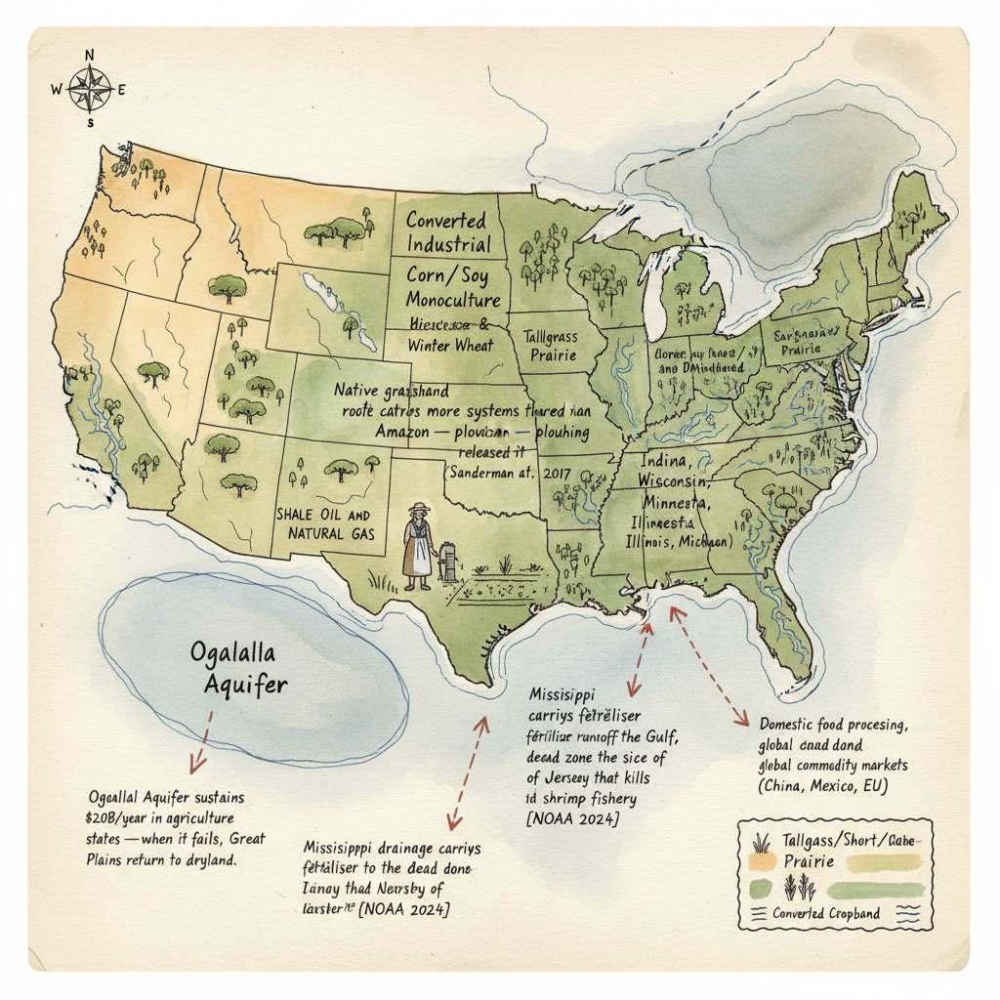

Great Plains–Mississippi336M people
where heated plains pump the convective storms that water the crops, above Ogallala gravel that holds water the storms never reach
Drive west from Kansas City and the land flattens until the sky is the only horizon. Somewhere under your wheels, six hundred feet down, the Ogallala Aquifer holds water that fell as rain when mammoths walked this grass. For sixty years, centre-pivot irrigation has drawn that water up through wells to grow corn — corn for cattle feed, corn for ethanol, corn for high-fructose syrup, corn for export.
Lives Lived Here
Before dawn in Garden City, Kansas, a Guatemalan woman drives to the Tyson meatpacking plant where she has worked the kill floor for three years. Her hands are numb most mornings — carpal tunnel from the repetitive cutting at line speeds that OSHA has tried and failed to regulate downward. She earns $17 an hour. The beef she processes will sell for $14 a pound in a Brooklyn grocery store. She sends $400 a month to her mother in Huehuetenango, minus the 6% Western Union fee. The town needs her and resents her in equal measure.
Two hundred miles north, outside Ogallala, Nebraska — the town that gave the aquifer its name — a fourth-generation farmer watches the well monitor on his phone. The static water level has dropped eleven feet since his father started irrigating in the 1970s. He grows corn because the USDA subsidy structure and the ethanol mandate make corn the only crop that pencils out. He knows the aquifer is finite. He also knows that switching to dryland wheat would halve his income and make the bank note on his equipment unpayable. He plants corn again.
On Pine Ridge Reservation, an Oglala Lakota grandmother drives forty-five minutes to the nearest grocery store in Chadron, Nebraska. The store on the reservation closed years ago. Her grandchildren eat commodity food — government-surplus cheese, canned meat, white flour — because fresh produce does not survive the supply chain to a place the supply chain was not built to reach. The buffalo that once fed her people by the millions are returning in small herds managed by the tribe and by the InterTribal Buffalo Council, grazing land that has not seen a plough. The herd is 800 head. It is not enough to feed the reservation. It is enough to remember what the grass was for.
On Pine Ridge Reservation, an Oglala Lakota grandmother drives forty-five minutes to the nearest grocery store in Chadron, Nebraska. The store on the reservation closed years ago. Her grandchildren eat commodity food — government-surplus cheese, canned meat, white flour — because fresh produce does not survive the supply chain to a place the supply chain was not built to reach. The buffalo that once fed her people by the millions are returning in small herds managed by the tribe and by the InterTribal Buffalo Council, grazing land that has not seen a plough. The herd is 800 head. It is not enough to feed the reservation. It is enough to remember what the grass was for.

Artistic impression. Geographic features are approximate.
What Presses
The weight on Great Plains–Mississippi
Pine Ridge Reservation, South Dakota — The Oglala Lakota live on 3,500 square miles of land that was never ceded — it was guaranteed by the Fort Laramie Treaty of 1868 and then taken anyway. Life expectancy here is 64 for men, 67 for women — twenty years below the national average. The nearest full-service hospital is in Rapid City, an hour and a half by car if you have a car. The Indian Health Service clinic on the reservation is chronically underfunded, chronically understaffed, and the subject of a 2024 Government Accountability Office report documenting wait times of weeks for urgent care. Adolescent suicide rates are five times the national average. The Pine Ridge grocery store closed; the nearest supermarket is in Chadron, Nebraska, 45 minutes away. Children grow up on commodity food — canned, processed, designed for shelf life, not for growing bodies. Diabetes prevalence is eight times the national average. This is not a developing country. This is the wealthiest nation on earth, ninety minutes from Mount Rushmore, where four million tourists a year photograph presidential faces carved into a mountain the Lakota call the Six Grandfathers.
Garden City, Kansas — The Tyson and National Beef plants here employ over 5,000 workers between them, the majority immigrants from Guatemala, Somalia, Myanmar, and Mexico. Line speeds run at 250 to 300 head per hour. Workers make the same cutting motion thousands of times per shift. Carpal tunnel surgery is so common that local clinics run dedicated programmes. Workers who report injuries risk losing shifts; undocumented workers who report injuries risk losing everything. During the 2020 COVID-19 outbreak, the Garden City plant became one of the deadliest workplaces in America — the governor declared it essential, the workers kept cutting, and the virus moved through the floor because the line does not stop. The beef they process reaches consumers who will never learn the name of the town where it was cut.
Western Kansas and the Texas Panhandle — Drive through Sublette or Satanta or Hugoton and you will see the circles shrinking. Centre-pivot irrigators that once reached a quarter-mile radius now reach less as the well pressure drops. Farmers who irrigated 1,000 acres in the 1990s irrigate 600 today. Their sons have moved to Wichita or Denver. The school in Sublette consolidated with the next town over. The hospital in Satanta closed. The aquifer level drops another foot each year, and each foot represents water that fell as rain before the last ice age. Kansas State University researchers estimate that at current rates, 70% of groundwater-irrigated farmland in southwest Kansas will have insufficient water for irrigation by 2060. The farmers know this. They pump anyway, because the bank note comes due this year and the aquifer does not send invoices.
Two resource streams flow out of the Great Plains — fossil fuel and industrial grain — worth hundreds of billions at their destination. What does not come back is the water, drawn from an aquifer that recharges at a fraction of the rate it is pumped; the topsoil, washed into the Mississippi at rates that exceed formation by a factor of ten; and the health of the workers whose bodies are the last unautomated step in the meatpacking line. 9 killed (3 months); shale oil and natural gas, corn, soybeans, and dairy products leaving; precipitation 219% of normal; 176 fires (7 days).
The Ogallala Aquifer is ancient rain held in stone. For millions of years it simply waited, and the grass above it grew and died and grew again in a rhythm that needed nothing from anyone. The rhythm now is ours — planting and pumping and harvesting on a schedule that treats a million years of accumulation as a single season's input. The water does not refuse. It simply goes. What remains when it is gone is the question the prairie has always known how to answer, if anyone is still there to ask it.
For Prayer
For communities enduring armed conflict across Great Plains–Mississippi — 9 killed in the past three months. For protection of civilians and for those who have lost loved ones.
For the land itself — water stress averaging 28% across the region. For pastoralists seeking grazing, for farmers awaiting rain, for the rivers and aquifers that sustain everything. For the land beneath their feet, from which shale oil and natural gas and corn, soybeans, and dairy products is extracted to benefit those far away.
Especially for United States, facing the most severe convergence of crises in this region. For those making impossible decisions about whether to stay or flee, and for those who cannot choose.
For humanitarian workers and missionaries in Great Plains–Mississippi — for their safety, their courage, and their capacity to reach those most in need.
For every act of resistance and care in Great Plains–Mississippi — communities sharing food, farmers saving seed, neighbours sheltering neighbours. That these small acts of defiance outlast the crisis.
Out of the depths have I cried to you, O Lord; Lord, hear my voice; let your ears consider well the voice of my supplication.
Most merciful God, who by the death and resurrection of your Son Jesus Christ delivered and saved the world: grant that by faith in him who suffered on the cross we may triumph in the power of his victory; through Jesus Christ your Son our Lord, who is alive and reigns with you, in the unity of the Holy Spirit, one God, now and for ever.
Amen.
Seeds of Hope
On the Cheyenne River and Pine Ridge reservations, the InterTribal Buffalo Council coordinates the return of bison to tribal lands — over 20,000 animals across 82 tribes, grazing prairie that industrial agriculture never reached. The buffalo do what no government programme has managed. They restore the grass. They aerate the soil. They bring back the prairie dog towns and the black-footed ferrets and the burrowing owls.
For Reflection
What would it mean to accept this contradiction—that your comfort and their suffering exist in the same global system—rather than trying to resolve it from the outside?
How might sitting with this discomfort change how you pray?
Looking Ahead
- The structural trajectory is toward irreversibility.
- The Ogallala's southern sections are past the point of practical recovery — the water that remains will last years, not generations, at current pumping rates.
- As irrigated land converts to dryland, the economic model that sustains Great Plains communities collapses inward, taking with it the tax base for schools, hospitals, and emergency services.
- Ogallala Aquifer depletion reports -- USGS publishes annual groundwater monitoring data; western Kansas and Texas Panhandle sections approach functional exhaustion within a generation
- Gulf of Mexico dead zone measurements July-August -- NOAA maps the hypoxic area fed by Mississippi-Missouri fertiliser runoff; any expansion threatens Louisiana and Texas shrimp fisheries
- Standing Rock and Dakota Access Pipeline easement renewal -- the pipeline crossing Lake Oahe on Sioux treaty land faces periodic legal challenges; watch for Army Corps of Engineers decisions
Carry This
What to bring with you from this briefing
Take Action
Organizations working at the nodes this briefing traces
Community-based organization across the Texas and Oklahoma panhandles working on sustainable agriculture, local food systems, and aquifer stewardship with ranchers and farmers facing Ogallala depletion.
Works directly with the farming communities the briefing identifies as dependent on Ogallala fossil water — supporting the transition from centre-pivot irrigation to dryland practices as aquifer levels drop irreversibly in western Kansas and the Texas Panhandle.
Coalition of 82 tribal nations restoring bison herds to reservation lands across the Great Plains, rebuilding the grassland ecology and food sovereignty that industrial agriculture displaced.
Directly enacts the bison restoration the briefing names as the counter-model to industrial corn-soy monoculture — Lakota, Cheyenne, and Osage nations rebuilding the grassland ecology that stored more carbon than the Amazon before the plough.
Grassroots organization campaigning against industrial agriculture pollution, factory farm expansion, and corporate consolidation. Advocates for water quality and family farm protections in Iowa.
Confronts the industrial corn-soy system the briefing describes — factory farm runoff carrying nitrogen and phosphorus into the Mississippi, where it flows to the Gulf dead zone that kills the shrimp fishery.
National organization investigating corporate consolidation in agriculture and water privatization. Documents how commodity subsidies and input costs squeeze family farms while rewarding industrial scale.
Investigates the subsidy structures and corporate consolidation the briefing identifies as driving the Great Plains' conversion from diverse farming to industrial monoculture — the economic forces behind Ogallala depletion and rural depopulation.
Federal interagency body tracking nutrient loading from 31 states into the Mississippi and the resulting Gulf of Mexico dead zone. Publishes annual hypoxia reports and state nutrient reduction strategies.
Monitors the fertiliser runoff pathway the briefing traces — from corn-soy fields across the Great Plains through the Mississippi drainage to the New Jersey-sized Gulf dead zone that destroys the shrimp fishery downstream.
Provides healthcare access and advocacy for migrant and seasonal farmworkers across the Great Plains and Mississippi region, documenting pesticide exposure, heat illness, and barriers to care.
Serves the migrant agricultural labor force the briefing identifies as essential to the industrial corn-soy-feedlot system — workers whose health costs are externalized while the commodity system depends on their labor for planting and harvest.
Generated 2026-03-18